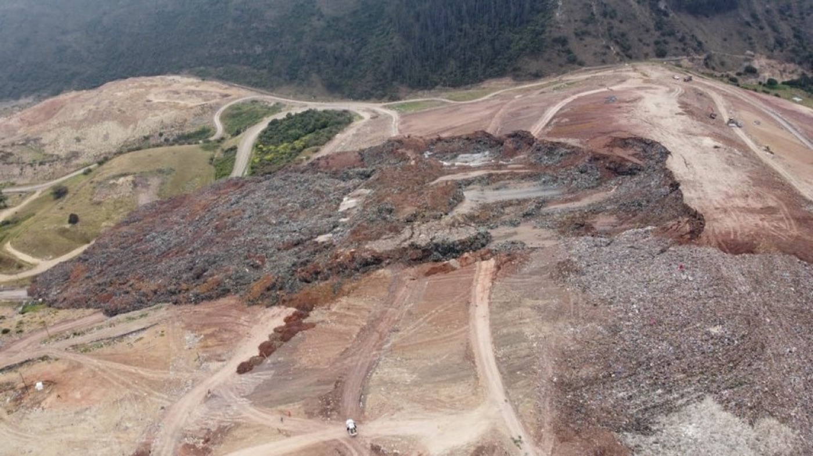

Manifiestos de Impacto Ambiental
Elaboración de MIA para autorizar tu proyecto ante la autoridad.

Cuatro áreas de especialidad bajo un mismo responsable. No ofrecemos solo estudios, le damos soluciones.
Impacto y riesgo ambiental

Elaboración de MIA para autorizar tu proyecto ante la autoridad.
Análisis inicial de viabilidad técnica y ambiental.
Trámites ante SEMARNAT.
Apoyo en cumplimiento de reglamentación local.
Seguimiento a requerimientos e inspecciones.
Diagnóstico social del expediente ambiental.
Topografía, suelos e hidrología

Levantamientos para diseño y seguimiento de obra.
Agua superficial y subterránea del sitio.
Caracterización del subsuelo para cimentaciones y celdas.
Rellenos sanitarios y basureros, nuestra especialidad

Estudios para elegir el sitio idóneo.
Diseño según la clasificación de la NOM-083.
Rehabilitación de basureros a cielo abierto y cierre técnico.
Proyectos llave en mano de valorización de residuos.
Aprovechamiento de residuos orgánicos e inorgánicos.
Adiestramiento para operar sitios de disposición final.
Manejo de residuos y permisos

RSU, de manejo especial y peligrosos.
Trámites RSU (recolección) y RME (disposición).
Acompañamiento técnico durante la ejecución de obra.
Cómo trabajamos, llave en mano
Aquí el orden sí importa: cada etapa habilita la siguiente, contigo informado en todo momento.
Prefactibilidad, topografía, hidrología y mecánica de suelos del sitio.
Manifiestos, permisos y atención ante SEMARNAT, PROFEPA y SEDEMA.
Diseño del relleno tipo A–D y de sus obras complementarias.
Supervisión, puesta en marcha y capacitación del personal operativo.
Si necesitan construir un relleno sanitario, no duden en llamarnos.
Prefactibilidad, mecánica de suelos, hidrología, topografía, proyecto ejecutivo, MIA y operación, un proyecto llave en mano.